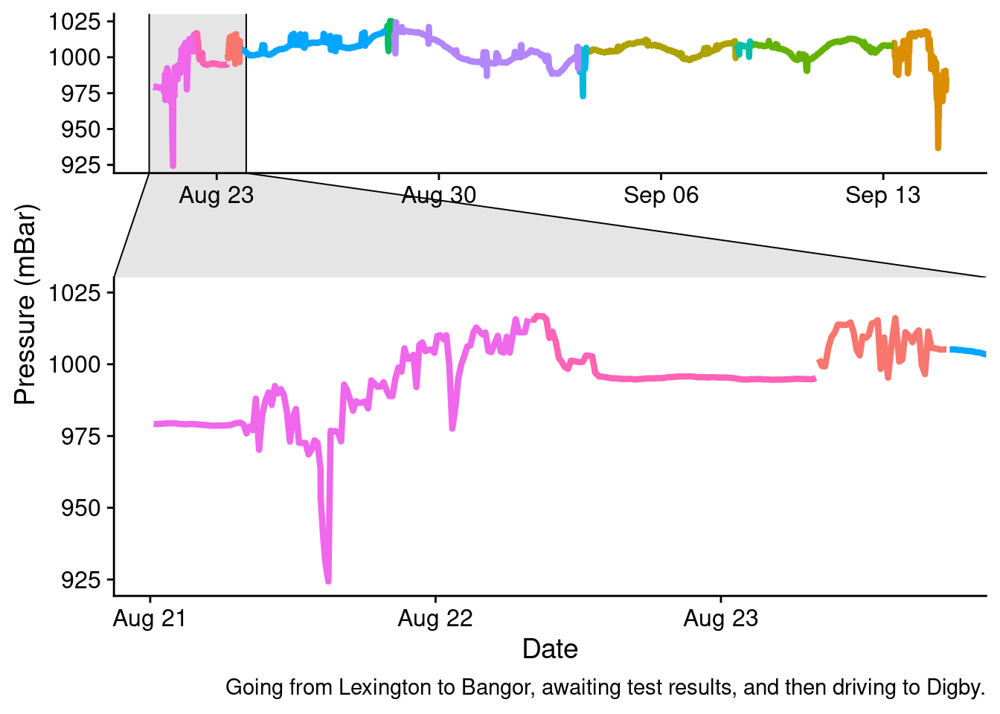
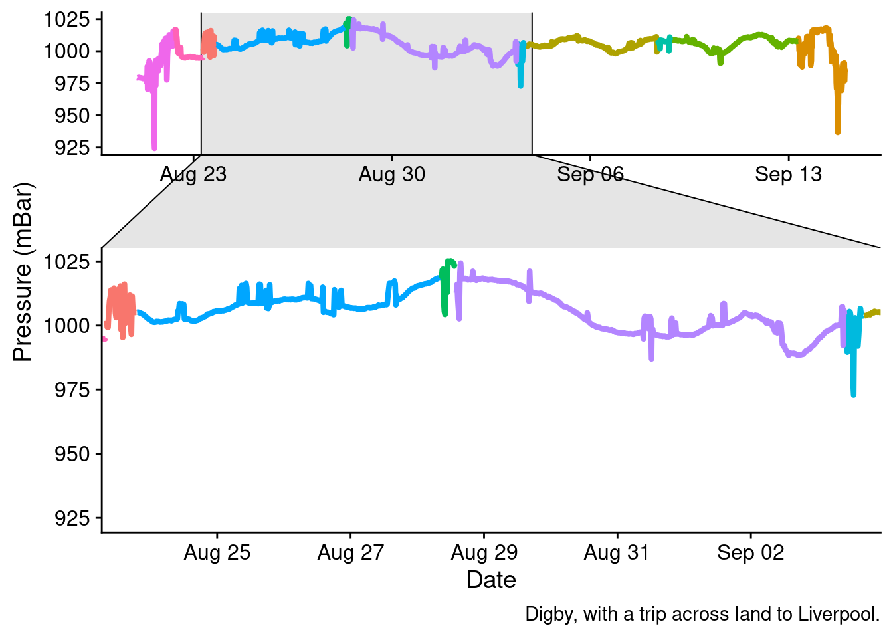
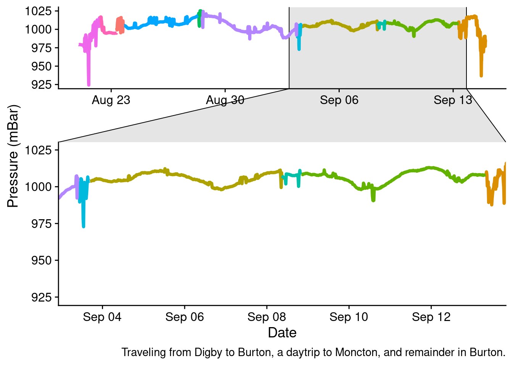
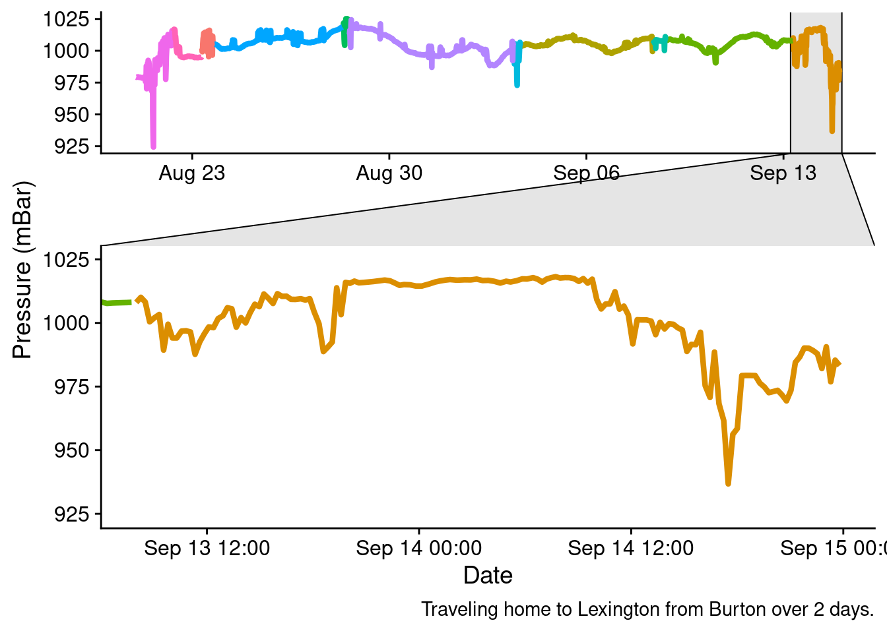

What can we see from my phone’s barometric pressure readings?
graphing
maps
visualization
Author
Robert M Flight
Published
September 20, 2021
The What?
I recently took a proper vacation, that involved driving from Lexington, KY, USA to Digby, NS, Canada and all points in between. I also have an app, Barometer Reborn, on my phone that measures the air pressure every 15 minutes or so. This data is useful for someone who suffers from pressure induced migraines. I decided it would be interesting to examine the air pressure readings over the course of my vacation, given that we crossed an extremely wide variety of terrain (and weather) in our travels.
So lets see what kinds of things we can see. A big caveat with this data is that we are essentially recording local pressure, a combination of pressure changes from both elevation and weather changes, as I don’t have the correction for elevation turned on. I think it will still be interesting to examine whats in here.
Load Data
I’ve previously uploaded data to Google Drive from my phone and downloaded it. Although it says “csv”, it turns out it’s actually tab-separated. I also do the conversion to a date-time format explicitly here, because it was easier than parsing the date format that the app uses.
library(dplyr)
Attaching package: 'dplyr'
The following objects are masked from 'package:stats':
filter, lag
The following objects are masked from 'package:base':
intersect, setdiff, setequal, union
This is kinda cool. At both ends it’s easy to see the passage there and back through the mountains (not big ones, but still)! It’s also easy to see that outside of those, I spent a lot of time near sea level, which is expected from Bangor, ME on.
Annotations
Let’s annotate it! We can come up with some simple annotations, like the driving sections, and then when we were in a location, and add those to the plot. The (1) and (2) labels are to keep from having weird plot artifacts appearing in the line plot.
We can plot some of these as subsets and zoom in on them.
big_plot2 +facet_zoom(x = location %in%c("Lexington - Bangor", "Waiting on Covid Test", "Bangor - Digby")) +labs(caption ="Going from Lexington to Bangor, awaiting test results, and then driving to Digby.")

big_plot2 +facet_zoom(x = location %in%c("Digby 1", "Daytrip to Liverpool", "Digby 2")) +labs(caption ="Digby, with a trip across land to Liverpool.")

big_plot2 +facet_zoom(x = location %in%c("Digby - Burton", "Burton 1", "Daytrip to Moncton", "Burton 2")) +labs(caption ="Traveling from Digby to Burton, a daytrip to Moncton, and remainder in Burton.")

You can actually see towards the tail end of our stay in Burton, the big increase in local pressure from a high-front that gave me a massive migraine and kept me home from activities with the family. Thankfully that was the only one.
big_plot2 +facet_zoom(x = location %in%c("Burton - Lexington")) +labs(caption ="Traveling home to Lexington from Burton over 2 days.")

Conclusions
I dunno, honestly. This would probably be more interesting if it was one or the other of changes due to altitude, or due to changes in the weather with an adjustment for the altitude. Many of the dips are due to changes occurring because of a change in altitude, with the biggest ones noted as we drove through the Appalachian mountains.
![]()